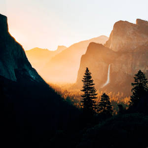

Jardín dormido
Las flores sueñan despacio, sin miedo al amanecer. Porque saben que el rocío volverá a florecer.

Camino lento entre la brisa, dejando huellas que no se ven. El viento guarda mi sonrisa, el tiempo olvida el porqué.
El silencio habla sin voz, la luna escucha mis dudas. En su luz me pierdo yo, entre sombras tan seguras.
Las flores sueñan despacio, sin miedo al amanecer. Porque saben que el rocío volverá a florecer.
El mar murmura secretos, que sólo el alma oye bien. Sus olas besan los sueños que nunca pudieron ser.

Te escribo sin tinta ni papel, sólo con lo que no digo. Tal vez el viento te lea, cuando pase por mi abrigo.

Nace el sol en mis pestañas, se despierta la emoción. El día trae esperanzas, envueltas en su canción.